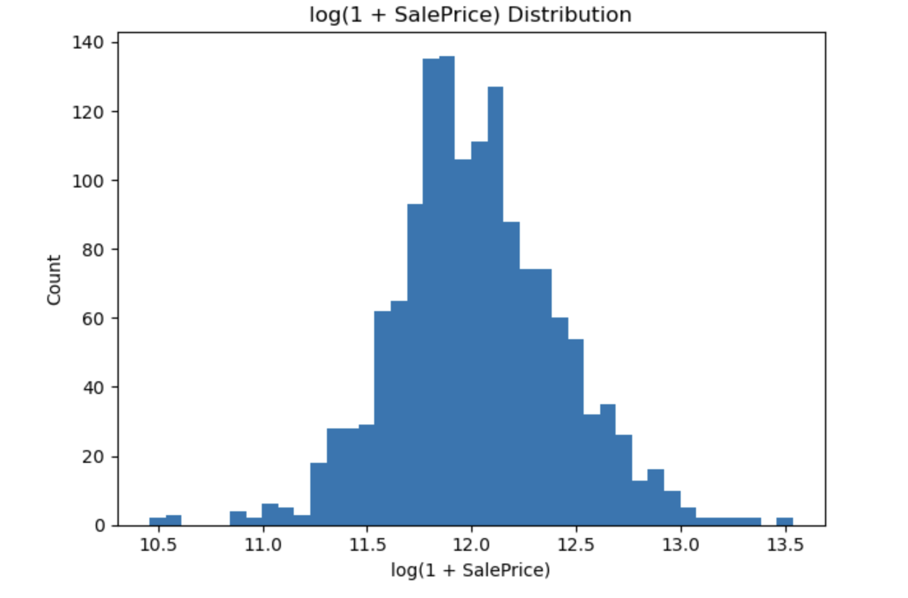
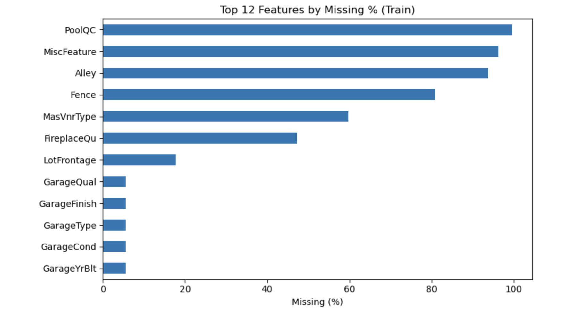
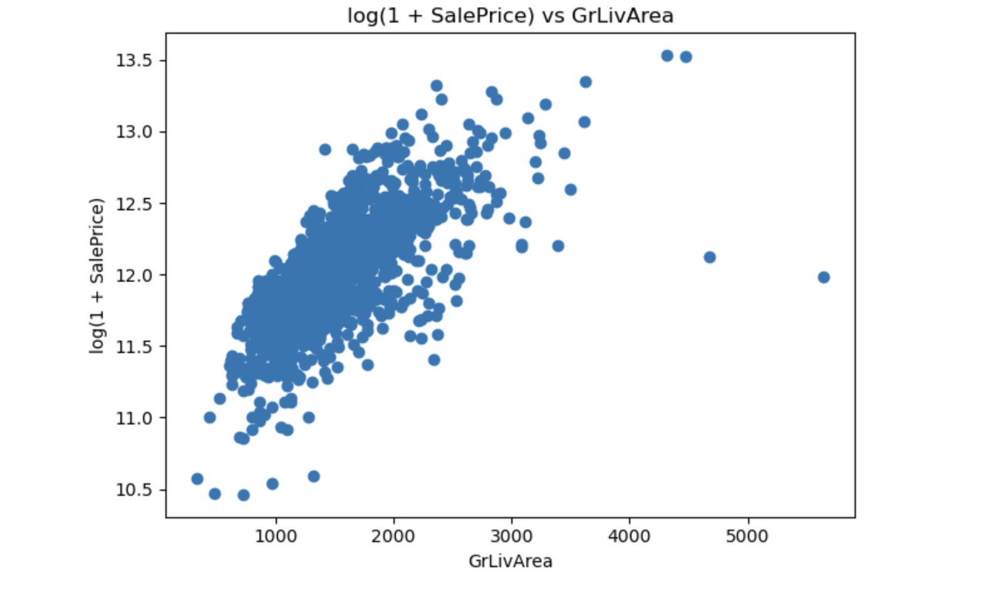
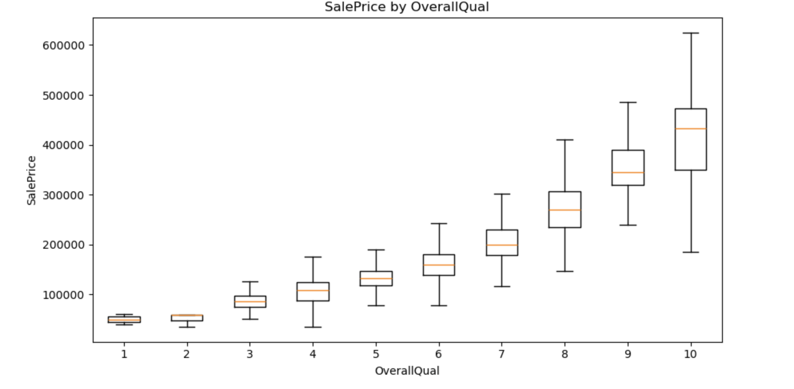
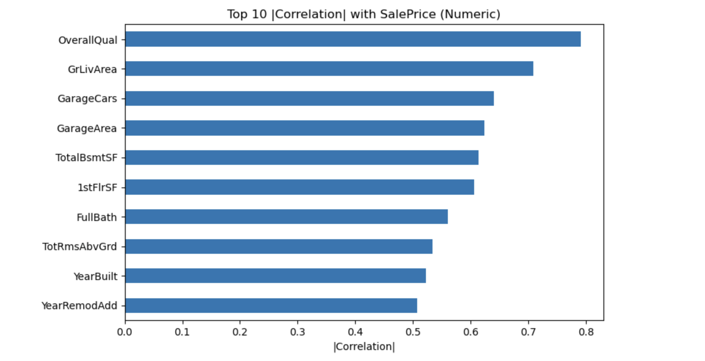

A brief sentence describing the project focus.
Housing prices affect everything from personal finances to city planning, and estimating a home’s value is a core task for buyers, sellers, lenders, and appraisers. With today’s rich property data, we can ask a practical question: Can we predict a home’s sale price from its physical characteristics and location-related features?
This project explores that question using the Kaggle House Prices: Advanced Regression Techniques dataset. It includes detailed residential properties from Ames, Iowa, with features such as lot size, neighborhood, overall material/finish quality, year built and remodeled, basement and above-ground living areas, number of bathrooms and bedrooms, garage capacity, and more. By analyzing patterns across these features and training predictive models, the goal is to understand which factors matter most—and how accurately we can estimate a home’s SalePrice.
For evaluation, we will follow the competition’s approach and use Root Mean Squared Error (RMSE) (on log-transformed prices when appropriate). The data are provided in two files:
train.csv — includes both features and the target SalePrice.test.csv — includes the same features without the target; predictions on this file can be submitted to Kaggle for a public score.The purpose is not only to measure model performance but also to reflect on broader implications. If machine learning can estimate sale prices well, it could help streamline valuations and provide transparency for buyers and sellers. However, it also raises questions about fairness and bias (e.g., neighborhood effects), explainability (why a model priced a home a certain way), and data drift (how changing markets can degrade a model over time). We will keep these considerations in mind as we build and evaluate our models.
Regression is a supervised learning approach for predicting a continuous value. In this project, that value is a home’s SalePrice. We train on many past sales where features (lot size, quality, square footage, year built, neighborhood, etc.) and the final price are known. The model learns patterns that map features → price, then we test how well it predicts prices for new homes.
Linear regression estimates price as a weighted combination of the input features plus an intercept (baseline). Each weight shows how much that feature tends to move the price when other features are held fixed. We’ll use scikit-learn’s LinearRegression as our starting point.
SalePrice) for stability).We’ll evaluate with Root Mean Squared Error (RMSE), aligned with the competition’s metric (often computed on log prices). Lower RMSE means more accurate price estimates. We’ll keep this metric consistent across experiments so improvements are easy to compare.
Goal. Before modeling, I want a high-level picture of the data: what the target looks like, which features might matter, where missing values live, and whether there are outliers or obvious data-quality quirks that could mislead a regression model.
train.csv: 1,460 homes, 81 columns (including SalePrice).test.csv: 1,459 homes, 80 columns (same features, no SalePrice).Target (SalePrice) is continuous and typically right-skewed (a few very expensive homes). I plan to consider log(SalePrice) during evaluation/modeling to reduce skew and stabilize variance.
LotArea, GrLivArea, TotalBsmtSF).YearBuilt, YearRemodAdd, YrSold).OverallQual): Typically one of the strongest single predictors; higher quality ↔ higher prices.GrLivArea and TotalBsmtSF often correlate strongly with price; total space tends to matter.GarageCars and GarageArea add signal (capacity tends to be cleaner than raw area).YearBuilt, YearRemodAdd (and “age at sale”) can relate to price; newer or recently remodeled homes may command higher prices.Neighborhood often captures location-driven price differences.OverallQual, GrLivArea, GarageCars, TotalBsmtSF, YearBuilt).Neighborhood, OverallQual, HouseStyle) to see separability across groups.GrLivArea, TotalBsmtSF, etc.) to see trend shape and potential heteroscedasticity.Known pattern in this dataset: a few homes with very large GrLivArea but relatively low price can act as influential outliers for linear models. I’ll visualize price vs. GrLivArea (both raw and log-price) and consider robust handling later (e.g., transformations, robust models, or careful outlier policy).
Space/size features can be correlated (e.g., GarageArea vs GarageCars, or multiple porch/basement sub-areas). I’ll watch for multicollinearity, as it can destabilize linear coefficients, and plan to:
GarageCars over GarageArea) when two features convey the same signal.Neighborhood) to ensure encodings align and to avoid using any information from test during training (no peeking at the target, no target-based transforms).log(1 + SalePrice).log(SalePrice) vs GrLivArea (size).OverallQual boxplot).SalePrice (bar chart).A prioritized list of promising features, a short list of risky/outlier patterns, and a concrete preprocessing plan for Experiment 1 (impute missing values, one-hot encode categoricals, and consider log-transforming the target). This sets up the baseline model fairly and transparently.

Log1p transform reduces skew and stabilizes variance.


Trend shape and potential heteroscedasticity; watch for influential outliers.

Higher quality homes typically command higher prices.

Bar chart of strongest numeric correlations with SalePrice.
Goal. Prepare a clean, model-ready table with minimal but sensible steps so the baseline is fair and reproducible.
SalePrice (will use log transform for modeling).Id from features (identifier only).handle_unknown='ignore' so unseen categories in validation/test don’t break the pipeline.log(1 + SalePrice) to reduce right-skew and align with the competition’s log-RMSE style evaluation.expm1 for dollar-RMSE reporting or Kaggle submission.Id and the target.TotalSF, AgeAtSale), saving these for Experiment 3.Goal. Build a simple, fair baseline model.
Model. I used Linear Regression (ordinary least squares) from scikit-learn. The model is wrapped in a pipeline that applies the Experiment 1 preprocessing (median imputation for numeric features, most-frequent imputation + one-hot encoding for categoricals), then fits a linear model on the log-transformed target log(1 + SalePrice). I trained with an 80/20 train–validation split and a fixed random seed for reproducibility. I did not tune hyperparameters in this baseline; the goal was to establish a transparent starting point before adding regularization or feature engineering in later experiments.
Why linear first? Linear regression is fast, interpretable, and gives a strong baseline on tabular data. Using the log target stabilizes variance and aligns with the competition’s log-RMSE evaluation style.
A log-RMSE of ~0.138 implies roughly 14–15% typical relative error, which is a strong baseline for this dataset. The model already captures core signals (overall quality, living area, etc.) with minimal preprocessing.
Coefficients in a plain linear model can be sensitive to multicollinearity and skewed features, and high-cardinality categoricals can increase sparsity. In the next experiments I’ll add regularization (Ridge/Lasso), consider standardizing numeric features, handle skewed variables more deliberately, and introduce feature engineering (e.g., total square footage, age at sale) to see if I can improve on this baseline.
Goal. Improve generalization over the baseline OLS by reducing overfitting and taming skew.
log1p to highly right-skewed numeric features (areas) so their effect is more linear and less dominated by extreme values.StandardScaler(with_mean=false) to the whole sparse design matrix so Ridge treats features on comparable scales.log(1 + SalePrice) and report log-RMSE (plus $ RMSE).Ridge reduces variance from many correlated/expanded features; log-transforming skewed inputs makes linear relationships more linear; standardization matters because ridge penalties are scale‑dependent.
GrLivArea, TotalBsmtSF, 1stFlrSF, LotArea, MasVnrArea) made relationships more linear and less driven by extremes.Neighborhood) may still introduce sparsity and subtle over/under-penalization.Experiment 2 delivers a meaningful, consistent bump over the baseline with modest complexity. The model is more robust and generalizes better—exactly what we wanted from regularization and skew handling.
I added light feature engineering to capture domain meaning and switched from linear models to a tree-based model to learn non-linearities and interactions.
TotalSF = GrLivArea + TotalBsmtSF, AgeAtSale = YrSold − YearBuilt, RemodAge = YrSold − YearRemodAddBathsTotal = FullBath + 0.5·HalfBath, PorchSF = OpenPorchSF + EnclosedPorch + 3SsnPorch + ScreenPorchHasBsmt, HasGarage, HasFireplace, HasPoollog(1 + SalePrice) to align with log-RMSE.Neighborhood) can be noisy for forests; trees may split on rare categories that don’t generalize.max_depth, min_samples_leaf, max_features), especially with sparse, wide matrices from one-hot.Non-linear models don’t automatically win on tabular data with many one-hot categoricals. Here, a regularized linear model (Exp 2) captured the major effects more cleanly than an untuned forest with sparse inputs.
Building a house-price predictor isn’t just a technical exercise—it sits inside real markets, policies, and people’s lives. Here are the key potential benefits, risks, and mitigations I considered.
This project can improve consistency and transparency in home valuations, but it also carries fairness, privacy, and overreliance risks—especially around location proxies and shifting markets. The responsible path combines careful feature choices, slice‑level evaluation, uncertainty reporting, and human oversight so the model informs decisions without quietly hard‑coding historical inequities.
This project gave me hands-on practice turning a raw tabular dataset into a working regression pipeline and showed how specific choices change performance.
log(1 + SalePrice)) was the single biggest stability win. It made errors more comparable across cheap vs. expensive homes and helped every model behave better.My first non‑linear attempt—Random Forest with light feature engineering—did not beat Ridge (0.14311). Even with features like TotalSF, AgeAtSale, BathsTotal, etc., an untuned forest on a very wide, sparse one‑hot matrix underperformed. Lesson: on this dataset, well‑regularized linear models set a high bar unless tree/boosting models are carefully tuned.
Id) so the baseline wouldn’t miss important signal. With Ridge, this wide set performed better than early pruning.HistGradientBoostingRegressor / XGBoost / LightGBM with careful tuning and early stopping.Overall, I learned that a disciplined baseline plus targeted regularization can be hard to beat, and that the best gains come from thoughtful preprocessing, not just swapping models.
ChatGPT (OpenAI, 2025) was used to clean up writing, improve clarity and professionalism, and help with page structuring.